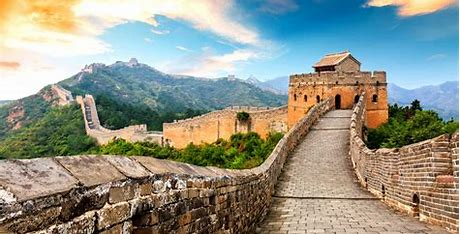

Great Wall of China

About Great Wall of China
The Great Wall of China is an ancient series of fortifications built along the historical northern borders of China to protect against invasions from various nomadic groups. Spanning over 21,000 kilometers, it’s one of the most impressive architectural feats in history. Constructed from as early as the 7th century BC, the most famous sections were built during the Ming Dynasty (1368–1644). The wall served not only for defense but also for border control, trade regulation, and even transportation. It was designated a UNESCO World Heritage site in 1987
| Ancient Name: | Wanli Changcheng |
| Constructed: | 3rd Century BC to 17th Century AD |
| Material: | Wood,stones,sand, and bricks |
| Average Height: | 20 to 23 feet |
| Altitude: | 4,722 feet |

Why the Great Wall Works as a Defense?
- Strongholds: Near the wall, strategically placed strongholds forced enemies to clear them before attacking the wall. This delay allowed defenders to regroup.
- Mountain Ridges: The wall follows natural mountain ridges, acting as a barrier. Even if enemies breached it, their strength was weakened.
- Beacon Towers: These provided early warnings, allowing soldiers to prepare for battle.
- Wide Top: The wall’s broad top facilitated material transport and quick troop movement.
- Economic Control: The wall limited trade between northern nomads and the central plain, weakening the nomadic groups.
Facts about Great Wall of China
- Age: The Great Wall is more than 2,300 years old, spanning over 9 dynasties.
- Length: The official length is 21,196.18 km (13,170.7 mi), which is about half the length of the Equator1. However, nearly 1/3 of the Wall has disappeared without a trace.
- Height: The typical height of the Great Wall is 5–8 meters (16–26 feet), which is around three to five times the height of an adult.
- Construction: The labor force included soldiers, forcibly-recruited peasants, convicts, and prisoners of war. The main materials were earth, stone, lime, and wood, with bricks largely used from the Ming Dynasty onwards.
- Structure: The Great Wall is not a continuous line; there are sidewalls, parallel walls, and sections with no wall where natural barriers exist.
- Purpose: Initially built for border defense, it also facilitated communication through beacon towers and allowed troops to travel faster. Visibility from Space: Contrary to popular belief, the Great Wall of China cannot be seen from space by the human eye without aid.
- Poisonous: Surprisingly, the Great Wall is highly poisonous due to the use of arsenic, known as “the poison of kings,” to prevent erosion by insects.